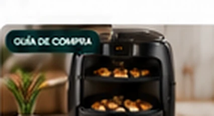
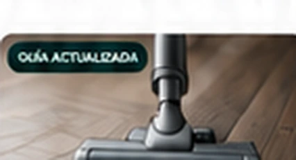

Resuelve primero la duda. Después elige producto.
Busca por categoría, problema o modelo. Priorizamos mantenimiento, coste real, espacio, ruido y diferencias que sí cambian la compra.
Mejores cafeteras superautomáticas
Qué elegir para espresso, leche, familias, presupuesto y mínimo mantenimiento.
Ver selección →
Mejores freidoras de aire
Capacidad, doble cesta y espacio según cuántos sois.
Abrir →
Aspiradoras sin cable
Peso, batería, mascotas y filtros antes de comprar.
Abrir →Café en casa
Compra, mantenimiento y problemas reales.
Philips 3300: mantenimiento y coste real
Filtros, limpieza y trabajo cotidiano.
Abrir →Superautomáticas por menos de 500 €
Qué compras merecen la pena con presupuesto limitado.
Abrir →De’Longhi o Philips
Leche, espresso, limpieza y perfiles.
Abrir →Cafeteras para café con leche
Latte, cappuccino y limpieza diaria.
Abrir →Cómo elegir una superautomática
Molinillo, leche, perfiles y presupuesto.
Abrir →Superautomática o manual
Comodidad frente a control.
Abrir →Cómo limpiar una superautomática
Rutina diaria, semanal y descalcificación.
Abrir →Por qué sale aguado el café
Molienda, dosis, grano y ajustes.
Abrir →Cocina
Capacidad, espacio y formatos que cambian el uso.
Hogar y aire limpio
Mantenimiento, mascotas, filtros y ruido.
Aspiradoras sin cable
Autonomía, peso y batería reemplazable.
Abrir →Aspiradora si tienes mascotas
Rodillos, sofá, depósito y pelo.
Abrir →Robots aspiradores
Navegación, base, fregado y consumibles.
Abrir →Purificador para alergia y polen
CADR, habitación y filtros.
Abrir →Purificador para dormitorio
Ruido nocturno, caudal y modo noche.
Abrir →Casa inteligente: por dónde empezar
Automatizar sin comprar dispositivos redundantes.
Abrir →Tecnología
Audio, conectividad y energía según uso real.
Cuidado personal
Compatibilidad, ergonomía y rutina antes de comprar.